Developing the code for the conecyl module¶
History about the software used to derive the equations¶
The equations are symbolically evaluated using a matrix notation, as explained in FIXME ADD REFERENCES. Initially the project used SymPy to derive the integrands and to perform the analytical integrations. Since SymPy showed to be very slow for the integrands herein evaluated, SymPy was used to derive the integrands and Mathematica used to perform the integrations. This required a considerable effort on data management and therefore it was decided to move the derivation of the integrands inside Mathematica. Now in Mathematica it is derived all the integrands, the analytical integration calculated and the symbolic simplifications performed, which is also an important and computationally expensive step.
SymPy is used to post process the results from Mathematica and print the matrices in a ready-to-paste-into-Cython form.
Current implementations¶
- static analysis (linear or non-linear)
- buckling analysis (linear or non-linear, using initial imperfections)
- load conditions: axial compression, torsion, pressure and any set of surface loads, concentraded or not
Definitions¶
In the ESL theories section it is explained
the types of kinematic equation implemented, defining the ESL theory
prefix mentioned below (currently clpt or fsdt).
The equation type prefix will be donnell or sanders, defining
if the model is built using the Donnell’s or the Sanders’ non-linear
equations.
Integration of the linear matrices¶
The linear matrices K0 and KG0 are integrated analytically, and the Mathematica routines necessary for this task are named as:
{ESL theory}_{equation type}_{boundary condition}_linear.nb
Each integrated smallest repeatable sub-matrix:
00, 01, 02, 11, 12 and 22
are stored in two text files inside the folder ./linear_mathematica,
one with a Mathematica format and another in Fortran format,
identified with a prefix
fortran_. Since the integrated matrices are greatly simplified for the
cylinder case, there are files for both cones and cylinders.
The routine print_linear_sparse.py is used to convert the Fortran
format to a
ready-to-past-in-Cython format, separating in row, col and value,
which is convenient for the implementation using sparse matrices. The
generated files are stored in ./linear_sparse. Note that the power
functions var**3 are transformed in (var*var*var), by default,
which can be modified by changing the parameters in the
mprint_as_sparse() function.
The integrated sparse matrices are pasted in the corresponding Cython codes, currently:
clpt_donnell_bcX_linear.pyx
clpt_sanders_bcX_linear.pyx
fsdt_donnell_bcX_linear.pyx
Integration of the non-linear matrices¶
The non-linear matrices K0L, KG and KLL are not integrated
analytically and their integrands are built for the numerical integration
algorithms. Mathematica is used to build the integrands, in the routines
named as:
{ESL theory}_{equation type}_{boundary condition}_nonlinear.nb
The output is printed inside ./nonlinear_mathematica and the routine
print_nonlinear_sparse.py is used to parse these results into something
that can be directly implemented into Cython, and the new outputs are
stored in ./nonlinear_sparse.
For each sub-matrix:
00, 01, 02, 10, 11, 12, 20, 21, 22
there will be a corresponding file:
fortran_{cone or cylinder}_{matrix name}_{sub-matrix}.txt
The sub-matrix is identified by a left and a right digit (0, 1 or
2) that indicate the region of the stiffness matrix that this
sub-matrix refers to.
The sub-matrices’ integrands are printed in a format ready to be programmed using sparse matrices:
c += 1
rows[c] = 0
cols[c] = col+4
out[c] = beta*out[c] + alpha*(p00*q04 + p01*q14 + p02*q24)
where alpha and beta are arguments passed by the numerical integration
algorithm (they give a pre-calculated weight for the point being integrated),
pij are the left qij the right components of the integrand.
The definitions of pij and qij are given in the corresponding files
with a p and a q character after the matrix name:
fortran_{cone or cylinder}_{matrix name}p_{left digit}.txt
fortran_{cone or cylinder}_{matrix name}q_{right digit}.txt
For example, to calculate the smallest repeatable sub-matrix 12 of
KG, first the file:
fortran_cone_kG_12.txt
should be openened, and the definitions for pij are found in:
fortran_cone_kGNLp_1.txt
and the definitions for qij are found in:
fortran_cone_kGNLq_2.txt
These are implemented in:
clpt_donnell_bcX_nonlinear.pyx
clpt_sanders_bcX_nonlinear.pyx
fsdt_donnell_bcX_nonlinear.pyx
Strain Equations¶
When the non-linear integrands are built another file containing the strain equations is written:
fortran_strainFunc.txt
This file is processed using the routine:
print_strainFunc.py
which creates the output files:
output_strainFunc.txt
output_e0.txt
output_eL.txt
the first with the full strain relations, the second with the linear and the third with the non-linear strain relations. The format saved is easy to implement in the Cython codes:
clpt_commons_bcX.pyx
fsdt_commons_bcX.pyx
Internal Forces¶
The internal force vector 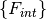 is separated in four parts:
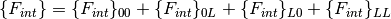
As can be seen in function compmech.conecyl.ConeCyl.calc_fint(),
the linear component  is calculated using:
is calculated using:
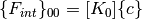
because ![[K_0]](../../_images/math/ca28b2833c10991ea042899048cb950e3b10a235.png) is calculated analytically and the numerical integration
errors are avoided in this way. For the other three terms 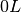, 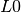 and
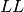, a numerical integration is performed. It is important
to say that computational cost associated
with the numerical integration of is approximately
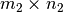 smaller than the integraion of
is calculated analytically and the numerical integration
errors are avoided in this way. For the other three terms 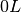, 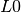 and
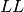, a numerical integration is performed. It is important
to say that computational cost associated
with the numerical integration of is approximately
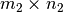 smaller than the integraion of ![[K_T]](../../_images/math/6de489b578ca938805144e2400be7e2773da19ab.png) .
.
The Mathematica routine:
{ESL theory}_{equation type}_{boundary condition}_nonlinear.nb
produces a file:
fortran_fint_L0_0L_LL.txt
which is post-processed by the routine:
print_fint_L0_0L_LL.py
that prints into ./nonlinear_sparse in a ready-to-paste format, that
is copy-pasted in Cython.